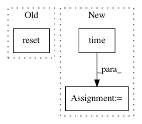

f33446be0e9e8deb631477db30f20ac436491f24,ch16/01_cartpole_es.py,,,#,84
Before Change
writer = SummaryWriter(comment="-cartpole-es")
env = gym.make("CartPole-v0")
print(env)
obs = env.reset()
print(obs)
net = Net(env.observation_space.shape[0], env.action_space.n)
print(net)
After Change
step_idx = 0
while True:
t_start = time.time()
batch_noise = []
batch_reward = []
batch_steps = 0
for _ in range(MAX_BATCH_EPISODES):
noise = sample_noise(net)
batch_noise.append(noise)
reward, steps = eval_with_noise(env, net, noise)
batch_reward.append(reward)
batch_steps += steps
if batch_steps > MAX_BATCH_STEPS:
break
step_idx += 1
m_reward = np.mean(batch_reward)
if m_reward > 199:
print("Solved in %d steps" % step_idx)
print(batch_reward)
break
train_step(net, batch_noise, batch_reward, writer, step_idx)
writer.add_scalar("reward_mean", m_reward, step_idx)
writer.add_scalar("reward_std", np.std(batch_reward), step_idx)
writer.add_scalar("reward_max", np.max(batch_reward), step_idx)
writer.add_scalar("batch_episodes", len(batch_reward), step_idx)
writer.add_scalar("batch_steps", batch_steps, step_idx)
speed = batch_steps / (time.time() - t_start)
writer.add_scalar("speed", speed, step_idx)
print("%d: reward=%.2f, speed=%.2f f/s" % (step_idx, m_reward, speed))
pass
In pattern: SUPERPATTERN
Frequency: 3
Non-data size: 3
Instances
Project Name: PacktPublishing/Deep-Reinforcement-Learning-Hands-On
Commit Name: f33446be0e9e8deb631477db30f20ac436491f24
Time: 2018-02-17
Author: max.lapan@gmail.com
File Name: ch16/01_cartpole_es.py
Class Name:
Method Name:
Project Name: openai/baselines
Commit Name: b875fb7b5e4feb85b9f1f1bf4e78f64c75595664
Time: 2019-02-27
Author: peterzhokhoff@gmail.com
File Name: baselines/common/tests/envs/mnist_env.py
Class Name: MnistEnv
Method Name: __init__
Project Name: OpenNMT/OpenNMT-tf
Commit Name: d7db4b1b9a6c9577ca3a09c4241cdd9db58b31bc
Time: 2020-01-16
Author: guillaumekln@users.noreply.github.com
File Name: opennmt/training.py
Class Name: Trainer
Method Name: __call__